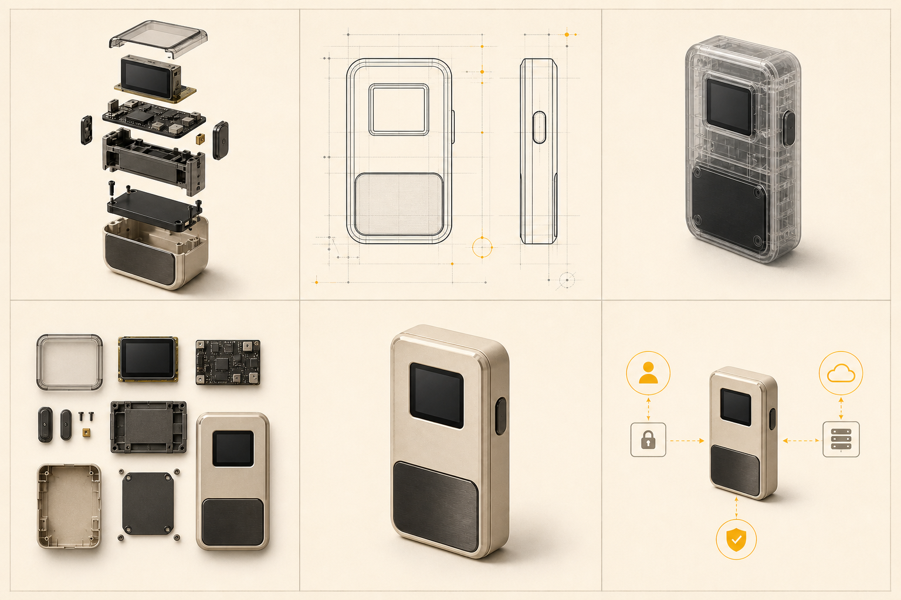

نوشتن /xray یا /pcb باعث نمیشه مدل واقعاً بدونه داخل محصول چیه. اگر عکس یا نقشهٔ داخلی ندادی، قطعاتی که میسازه فقط تصویرسازیان. برای تبلیغ و ایدهپردازی خوبه؛ برای تعمیر، مهندسی، امنیت یا ادعای فنی قابلاعتماد نیست.
اول ببین یک محصول چقدر میتونه عوض بشه
در تصویر پایین، سوژه در همهٔ خانهها یکیه؛ فقط هدف بصری عوض شده. همین تفاوت ساده مشخص میکنه چرا گفتنِ «یه عکس خفن بساز» معمولاً خروجی متوسط میده.

روش استفاده؛ در چهار قدم
محصول کامل، نور مناسب، پسزمینهٔ ساده و جزئیات واضح.
میخوای داخلش دیده بشه، کارکردش توضیح داده بشه یا فقط خوشگلتر بشه؟
فرم، نسبتها، زاویه، دکمهها، پورتها، لوگو و جنس بدنه.
اگر دادهٔ فنی نداری، صریح بگو خروجی مفهومی و بدون ادعای دقته.
چون مدل ممکنه همراه با سبک، خود محصول رو هم دوباره طراحی کنه. تو باید بگی «لباسش رو عوض کن، صورتش رو نه».
قالب مادر؛ این رو نگه دار
جای [MODE] یکی از ۹۰+ حالت پایین رو بذار. بعد براساس نیازت بخشهای اضافه رو کموزیاد کن.
Use the uploaded product photo as the identity reference. Create a [MODE] visualization of the exact same product. Preserve its silhouette, proportions, camera angle, screen, buttons, ports, materials, colors and branding. Change only the visual presentation requested by [MODE]. Keep the composition clean and readable. Do not invent measurements, labels or hidden components. If internal data is not provided, make the internals clearly conceptual and avoid factual claims. No watermark.
سریع انتخاب کن: دقیقاً چی میخوای؟
| هدفت | اول اینها رو امتحان کن | حواست به چی باشه؟ |
|---|---|---|
| داخل محصول رو نشان بدم | /explodedview /xray /cutaway | اگر مرجع داخلی نداری، خروجی فقط مفهومی است. |
| شبیه سند مهندسی بشه | /blueprint /orthographic /technicaldrawing | ابعاد و مشخصات را خودت بده؛ مدل نباید حدس بزند. |
| کارکردش رو توضیح بدم | /howitworks /signalflow /function | مسیر واقعی را با منبع یا دیاگرام خودت قفل کن. |
| برای تبلیغ جذابش کنم | /hero /productposter /levitated | متن نهایی را بعداً در نرمافزار طراحی اضافه کن. |
| برای آموزش امنیت استفاده کنم | /trustboundary /attacksurface /signingflow | مرز اعتماد و اختیار را از معماری واقعی بگیر، نه تخیل مدل. |
| فرم و طراحی بدنه مهمه | /industrialdesign /designlanguage /clay | روی نسبتها و محل جزئیات محصول سختگیر باش. |
۱۵ حالت پیشنهادی برای شروع
اگر نمیخوای بین ۹۰+ گزینه گم بشی، اینها بیشترین تفاوت واقعی و کاربردی رو ایجاد میکنن:
/explodedview/xray/cutaway/teardown/knolling/blueprint/patent/anatomy/securityarchitecture/signalflow/transparent/industrialdesign/howitworks/attacksurface/signingflowشش پرامپت کامل و آمادهٔ کپی
نمای انفجاری تمیز
/explodedviewبرای نشاندادن لایهها و ترتیب مونتاژ؛ عالی برای پوستر و معرفی محصول.
Use the uploaded product photo as the identity reference. Create a clean exploded-view visualization of the exact same product. Separate the casing, display, main board, battery, buttons, screws and lower panel vertically in logical assembly order. Preserve the original silhouette, proportions, colors and materials. Use soft studio lighting on a warm neutral background. Keep spacing precise, with no overlaps. Do not add text, labels, logos or invented measurements. Any unseen internals must be presented as conceptual, not factual.
بلوپرینت بدون عددسازی
/blueprintبرای ظاهر فنی؛ فقط وقتی ابعاد واقعی داری، اندازهها رو هم وارد پرامپت کن.
Convert the uploaded product photo into a precise engineering-blueprint presentation. Show front, back, side and top orthographic views of the exact same product on a clean grid. Preserve every visible button, port, screen and proportion. Use crisp monochrome linework with one restrained accent color. Do not invent dimensions or specifications. Leave measurement fields blank unless values are supplied by me. No watermark and no decorative fake labels.
بدنهٔ شفاف یا ایکسری
/xrayبرای اینکه ظاهر بیرونی حفظ بشه ولی یک تصویر مفهومی از داخل هم دیده بشه.
Create an x-ray-style product visualization from the uploaded photo. Keep the exact exterior silhouette and camera angle visible as a translucent shell, while showing conceptual internal layers with clean separation. Preserve the screen, side controls, ports, materials and colors. Make the result photorealistic but clearly illustrative. Do not claim the internal layout is accurate, do not add labels, and do not redesign the product.
پوستر تبلیغاتی مینیمال
/productposterبرای کاور، پست یا لندینگ؛ متن رو داخل مدل نساز، بعداً خودت اضافه کن.
Turn the uploaded product photo into a premium minimal product-poster hero image. Preserve the exact product identity, shape, controls, materials and branding. Place it large in a confident three-quarter view with soft directional studio light, a subtle grounded shadow and generous negative space for a headline. Use a restrained editorial palette and one accent color. No generated text, no extra accessories, no redesign, no watermark.
معماری امنیتی مفهومی
/securityarchitectureبرای آموزش مرزها و مسیر داده؛ معماری واقعی باید از خودت بیاد.
Use the uploaded product photo as the central identity reference and create a conceptual security-architecture visual around it. Show only these supplied zones: [EXTERNAL INTERFACES], [APPLICATION PROCESSOR], [SECURE ENVIRONMENT], [TRUSTED DISPLAY], and [HUMAN APPROVAL]. Use clear arrows for data movement and one thick visual boundary around the secure zone. Preserve the product exterior exactly. Do not invent chips, protocols, guarantees or attack resistance. No tiny labels, no decorative cyberpunk UI, no watermark.
توضیح خیلی سادهٔ نحوهٔ کار
/howitworksبرای مخاطب مبتدی؛ سه تا پنج مرحله، تصویر بزرگ و متن خیلی کم.
Create a simple ELI5 “how it works” visual using the uploaded product photo. Preserve the exact product identity. Explain this supplied process in four large visual steps: [STEP 1], [STEP 2], [STEP 3], [STEP 4]. Use one clear icon or close-up per step, simple arrows, large empty label areas and minimal clutter. Do not invent any process step or technical claim. No generated text; leave clean spaces so I can add the final labels later.
دایرکتوری کامل ۹۰+ حالت
اسم یا کاربردی که میخوای رو جستوجو کن؛ مثلاً تبلیغ، امنیت، داخل یا blueprint.
دیدن داخل محصول و قطعات ۱۴ حالت
/explodedviewقطعات رو به ترتیب مونتاژ از هم جدا و معلق میکنه./anatomyکالبدشکافی تمیز محصول با اشاره به نقش هر بخش./xrayبدنه دیده میشه ولی داخلش مثل ایکسری نمایانه./cutawayبخشی از قاب بریده میشه تا داخل دیده بشه./crosssectionبرش دقیق از وسط، شبیه کتاب مهندسی./teardownبازکردن واقعگرایانه و چیدن قطعات، نزدیک به iFixit./knollingهمهٔ قطعات روی سطح صاف و با زاویههای ۹۰ درجه مرتب میشن./transparentقاب کاملاً شفاف و فوتورئال برای دیدن اجزای داخل./ghostedپوسته نیمهشفاف میشه ولی قطعات داخلی مات میمونن./skeletonفقط اسکلت سازهای و اجزای ضروری باقی میمونه./layersمحصول لایهلایه پوستکنده میشه، نه الزاماً قطعهبهقطعه./insideیک نگاه عمومی و واقعگرایانه به داخل محصول./undertheskinنمای دراماتیک نیمهشفاف از زیر پوست محصول./partsفهرست سادهٔ قطعات، بدون توضیح مفصل.
نقشه، مهندسی و مونتاژ ۱۸ حالت
/blueprintنقشهٔ مهندسی روی گرید، با نماها و جای ابعاد./schematicدیاگرام سادهٔ اتصالها و عملکرد، نه ظاهر واقعی./circuitmapبرد، چیپها، مسیرها و جریان برق رو برجسته میکنه./componentmapمحصول سالم با شماره یا کالاوت روی اجزای اصلی./specsheetرندر محصول کنار ابعاد، وزن، جنس، پورت و مشخصات./technicaldrawingخطکشی CAD تکرنگ، بدون حس بلوپرینت آبی./patentتصویر پتنت سیاهوسفید با چند نما و قطعات شمارهدار./wireframeتبدیل محصول به مش یا وایرفریم سهبعدی./cadرندر صنعتی CAD با هندسهٔ دقیق و متریال خنثی./isometricنمای سهبعدی ایزومتریک برای مستندات و راهنما./orthographicنماهای روبهرو، پشت، کنار، بالا و پایین./dimensionedمحصول در مرکز و خطوط اندازهگیری دورش./materialsتفکیک ناحیهها براساس شیشه، فلز، پلاستیک، باتری و برد./assemblyنشان میده قطعات چطور با فلش و ترتیب به هم میرسن./assemblyguideبازسازی شمارهدار به سبک دفترچهٔ مونتاژ./manufacturingقاب، قطعات قالبی، برد، پیچ، چسب، واشر و نقاط اتصال./bomBill of Materials تصویری؛ هر قطعه جدا و شمارهدار./technicalsketchاسکچ فنی آزاد با اندازهها و حاشیهنویسی.
کارکرد، الکترونیک و امنیت ۲۰ حالت
/mechanismتمرکز روی دکمه، لولا، سوییچ و بخشهای متحرک./functionتوضیح میده هنگام استفاده داخل محصول چه اتفاقی میافته./signalflowمسیر حرکت داده بین ورودی، پردازنده، نمایشگر و اتصالها./powerflowمسیر باتری تا مدیریت انرژی، چیپها و نمایشگر./securityarchitectureالمان امن، کلیدها، نمایشگر مطمئن، مرز امضا و رابطها./datapathورود، حرکت و خروج اطلاعات از محصول./thermalنمای دوربین حرارتی از بخشهای احتمالاً گرم./stressmapنقشهٔ تنش سازهای به سبک تحلیل FEA./magneticfieldنمایش میدان آنتن، NFC یا اتصال بیسیم./electronicsقاب رو عقب میبره و الکترونیک رو قهرمان تصویر میکنه./microscopicنمای ماکرو یا میکروسکوپی از برد و سطح چیپ./chipsetچیپهای اصلی برد رو جدا و برجسته میکنه./pcbتحلیل بالا به پایین و پرجزئیات برد مدار چاپی./secureelementچیپ امن رو نقطهٔ اصلی تصویر و ارتباطش رو با بقیه نشان میده./keyflowمحل ساخت، نگهداری و استفادهٔ کلیدها؛ بدون نمایش راز واقعی./signingflowدرخواست تراکنش، مرور، تأیید و امضا رو مرحلهای میکنه./attacksurfaceرابطهای قابلدسترسی از بیرون و مرزهای اعتماد./trustboundaryفرق اتفاقهای داخل و خارج محیط امن رو پررنگ میکنه./threatmodelداراییها، مرزها، بردارهای حمله و دفاعها./cybersecurityیک نمایش تاریک و امنیتمحور از مرزها و مسیر داده.
معرفی محصول و طراحی صنعتی ۱۶ حالت
/deconstructedنسخهٔ هنریتر نمای انفجاری با قطعات معلق./levitatedقطعات در یک شات تبلیغاتی پریمیوم شناور میشن./productposterپوستر تجاری تمیز با محصول و فضای کالاوت./industrialdesignبرد ارائهٔ طراح صنعتی با اسکچ، فرم و متریال./designlanguageانحنا، تناسب، سطح، لبه، دکمه و انتخابهای بصری./conceptsheetصفحهٔ کانسپت با ترکیب اسکچ و رندر./sketchاسکچ دستی طراح محصول./markerرندر اسکچ با ماژیک طراحی صنعتی./whiteboardتوضیح سادهٔ محصول با ماژیک روی وایتبرد./instructionmanualتصویر تکرنگ و مرحلهای شبیه دفترچهٔ IKEA./infographicترکیب چند نمای محصول، آیکن و توضیح کوتاه./minimalinfographicهمان اینفوگرافیک با متن کمتر و تصویر بزرگتر./museumارائهٔ موزهای با حس آرشیوی و اطلاعات زمینه./encyclopediaصفحهٔ کالبدشناسی شبیه کتاب یا دانشنامه./fieldguideکارت شناسایی علمی با برچسب و مشاهدهها./featuresمحصول سالم در مرکز و فقط ویژگیهای کلیدی دورش.
استایلهای خاص و آزمایشگاهی ۲۱ حالت
/retrocomputerتصویر فنی شبیه دفترچهٔ کامپیوترهای قدیمی./cyberpunkتشخیص نئونی و HUD سایبرپانکی./hudرابط آیندهنگر برای اسکن اجزای محصول./scanمحصول زیر اسکن فنی با لایههای تصویری./diagnosticداشبورد وضعیت باتری، چیپ، نمایشگر و پورتها./terminalفضای هکری و ترمینالی دور محصول./datasheetصفحهای با حس دیتاشیت قطعات الکترونیکی./labمحصول مثل یک نمونه در آزمایشگاه مهندسی بررسی میشه./forensicمعاینهٔ فنی شبیه مدرک جرم و پزشکی قانونی./militarymanualتصویر کاربردی و خشک به سبک دفترچهٔ میدانی./retroblueprintبلوپرینت قدیمی روی کاغذ یا سطح فرسوده./patent1900طرح حکاکیشدهٔ پتنتهای اوایل قرن بیستم./vintageanatomyپلاک آناتومی علمی قدیمی برای محصول./legoبازسازی محصول با قطعات ماژولار شبیه آجرک./lowpolyمدل سهبعدی با چندضلعیهای کم./voxelبازنمایی بلوکی و وکسلی./clayرندر خمیری تکرنگ برای تمرکز روی فرم./glassپوسته مثل شیشهٔ شفاف میشه تا داخل دیده بشه./chromeکانسپت فلزی براق و آیندهنگر./prototypeنمونهٔ اولیهٔ مهندسی با سختافزار نمایان./breadboardالکترونیک محصول مثل ستاپ آزمایشی برد توسعه بازسازی میشه.
داستان، مقایسه و تبلیغات ۱۲ حالت
/evolutionقطعهٔ داخلی، نمونهٔ اولیه و محصول نهایی در چند مرحله./timelineروشنشدن، استفاده، تأیید یا خاموششدن در یک مسیر زمانی./howitworksتوضیح خیلی ساده و تصویری از نحوهٔ کار./macroعکاسی خیلی نزدیک برای بافت و جزئیات./heroشات تبلیغاتی پریمیوم بدون کالبدشکافی فنی./studioعکس تبلیغاتی تمیز در استودیو./appleadتبلیغ بسیار مینیمال تکنولوژی مصرفی؛ بدون کپی مستقیم برند./comparisonمقایسهٔ کنارهم با محصول یا نسل دیگر./beforeafterنسخهٔ سالم کنار نسخهٔ فنی یا داخلی./generationنسل یک، نسل دو و یک آیندهٔ فرضی./scaleمقایسهٔ اندازه با دست، کارت، گوشی یا سکه./detailsکلاژ کلوزآپ از نمایشگر، لبه، دکمه، پورت و متریال.
بهترین نتیجه از اسم سبک نمیاد؛ از محدودیت خوب میاد
یک حالت انتخاب کن، مشخص کن چه چیزهایی نباید تغییر کنن و اگر دادهٔ فنی نداری، جلوی مدل رو برای عددسازی و قطعهسازی بگیر. بعد از اولین خروجی هم فقط یک مشکل رو در هر بار اصلاح کن؛ نه اینکه کل پرامپت رو از نو منفجر کنی.
دیسکلیمر: تصاویر نمونه و بخشهایی از آمادهسازی این راهنما با کمک ایجنت هوش مصنوعی ساخته شده. تصویرسازیهای داخلی، امنیتی و مهندسی صرفاً آموزشی و مفهومیان و جای نقشه، دیتاشیت یا بررسی متخصص رو نمیگیرن.